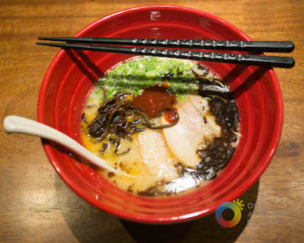

History of Miso Ramen
Miso ramen is the fourth and youngest staple form of ramen that emerged in Japan around the 1960s. It was originally created in Northern Hokkaido, and was supposed to be a soup that could stave off the annual cold winters that people in the area had to endure. News of adding miso to ramen broth quickly spread, and the delicious dish can now be found almost anywhere throughout Japan.

Where To Get The Best Miso Ramen in Boston
Isshoindo Ramen is a very some ramen place opened in half year. I is located at super 888 in Allston. When I first jet in, I wasn't having two much expectation, however the flavor of the spicy miso soup surprised me right the way. The soup is very flavored and eggs is well cooked as well. It has a little secret black source on top of miso soup which I rarely see it in US, however very common in Japan. I personal think the mix of that black source and well cooked miso soup is the best in Boston
1 Brighton Ave Ste 16, Allston, MA 02134